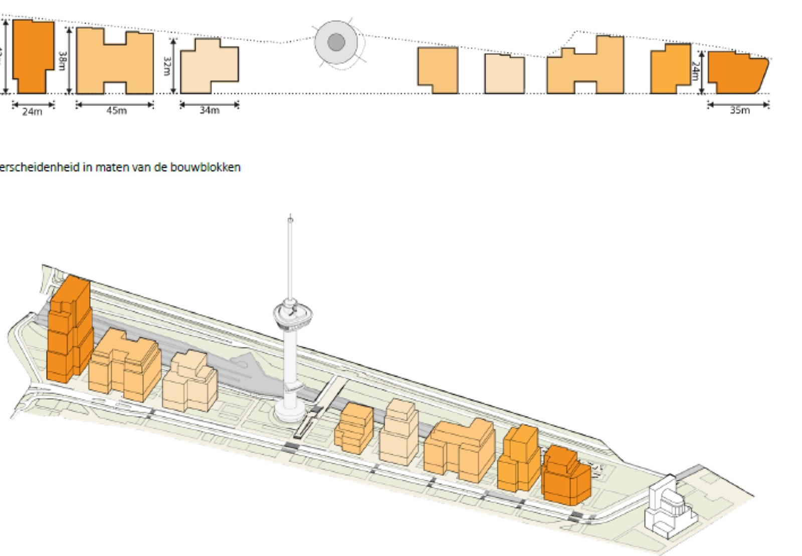
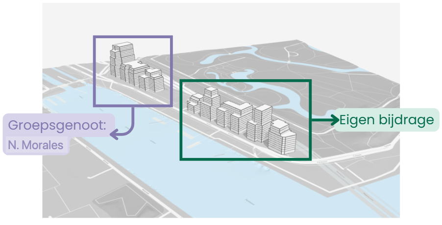
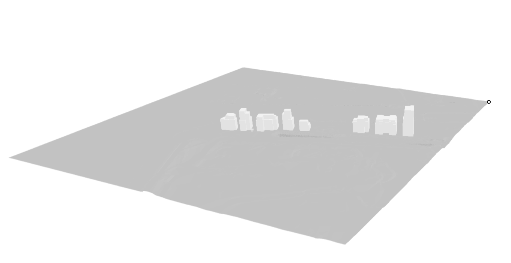
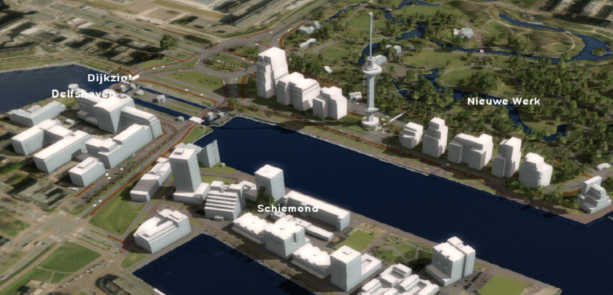
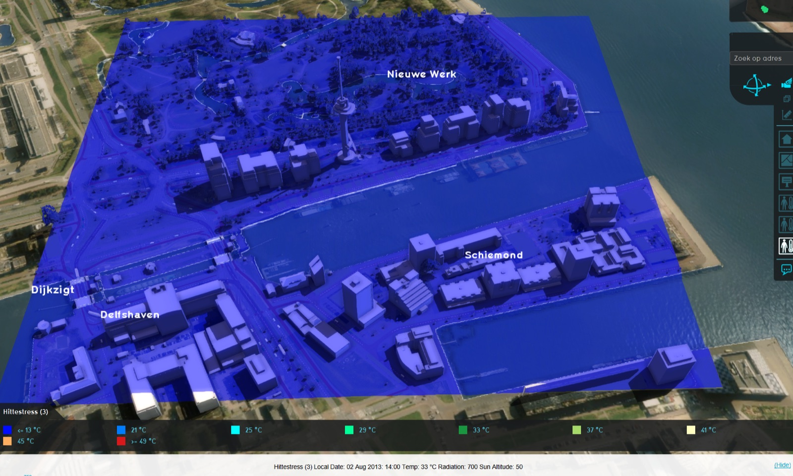
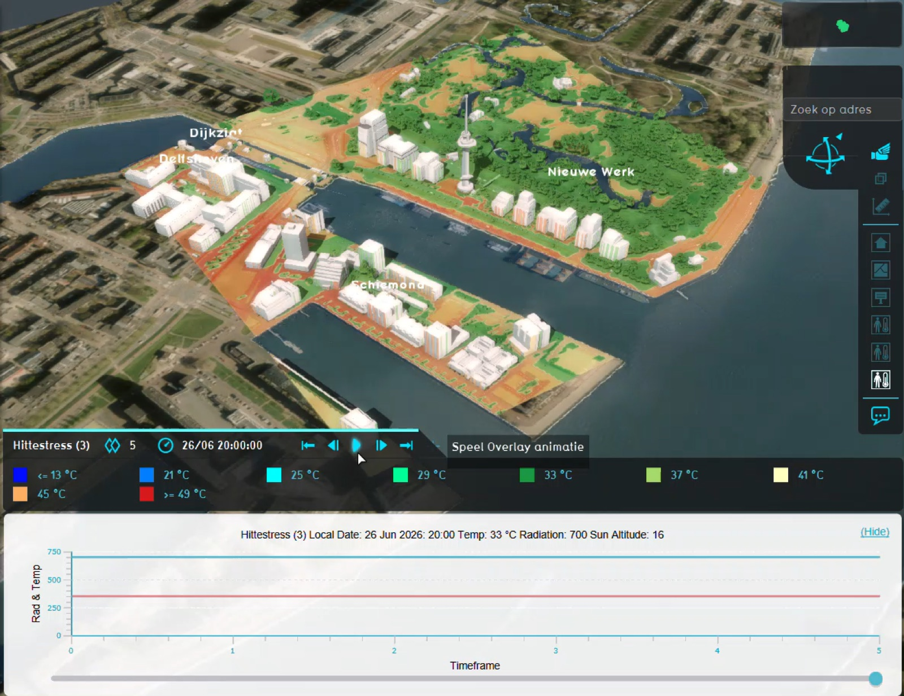

Project
Masterplan Parkhaven in Forma
De gebouwen van het masterplan Parkhaven, samen met een groepsgenoot nagebouwd in Forma als basis voor de hittestressanalyse, en een eerste simulatie in Tygron.

De opgave
Voor de simulaties in fase 2 hadden we zo snel mogelijk de gebouwen van het masterplan nodig. Forma en Tygron had ik nog nooit gebruikt.
Het proces
N. Morales en ik verdeelden de gebouwen en bouwden ze na in Forma, met de situatietekening als onderlegger. Omdat mijn deel eerst klaar was, legde ik uit hoe ik het in Forma had gedaan, zodat de gebouwen op elkaar aansloten. Daarna probeerden we de hittestress te simuleren in Tygron.
- Gebouwen verdelen en de situatietekening op schaal als onderlegger gebruiken
- Eigen gebouwen modelleren in Forma en de werkwijze uitleggen aan N. Morales
- Terrein in Revit verwijderen en opnieuw exporteren als IFC voor ArcGIS en Tygron
- Hittestress simuleren in Tygron
Werk in detail
Masterplan
6 oktober 2026
Uit de gegevens van het masterplan haalden we de maten en hoogtes van de bouwblokken.

Gebouwen in Forma
- Wat deed ik
- Samen met N. Morales de gebouwen van het masterplan nagebouwd in Forma.
- Aanpak
- De situatietekening gebruikt als onderlegger op schaal en de hoogtes van de gebouwen uit de gegevens van het masterplan gehaald.
- Uitdaging
- Het was vooral een gepuzzel om alles precies te laten overeenkomen met het masterplan. Vooral de hoogtes waren lastig, omdat in de gegevens alleen het toppunt van het gebouw stond en niet de verdiepingen ertussen. Daarnaast exporteert Forma altijd een IFC-bestand inclusief terrein, en dat hadden we niet nodig. Daarom heb ik het eerst in Revit gezet om het terrein weg te halen, en het daarna pas weer als IFC geëxporteerd voor Tygron of ArcGIS.
- Wat ging goed
- Forma was best eenvoudig om mee te werken, dus het was de snelste manier om de gebouwen te ontwerpen.


Tygron
- Plan
- Hittestress simuleren in Tygron.
- Probleem
- We verloren veel tijd aan het importeren van het Forma-ontwerp. Daarna rekende Tygron met data van 2013 (afbeelding 2) en hadden we geen tijd om dat uit te zoeken.
- Besluit
- We gingen verder met analyses in ArcGIS.
- Daarna
- Na de presentatie hebben N. Morales en ik verder geëxperimenteerd en is het alsnog gelukt (afbeelding 3).



Het resultaat
Alle gebouwen staan in één model, klaar voor de analyses. Forma was best eenvoudig om mee te werken, dus het was de snelste manier om de gebouwen te ontwerpen. Ik wil me verder verdiepen in de omgevingsanalyses die Forma zelf kan maken. Tygron lukte tijdens het project niet, maar na de presentatie hebben N. Morales en ik verder geëxperimenteerd en is het alsnog gelukt.
Feedback
Feedback docenten (eindpresentatie)
Algemene feedback: Jullie hebben als groep vooral gefocust op het maken van analyses ==> er is veel informatie. Maar wat ga je er nu mee doen? Of wat hebben jullie hier precies mee gedaan? Dat ontbreekt nog in de presentatie. Mogelijk veel laten leiden door AI-ondersteuning, maar daardoor mogelijk cruciale vragen vergeten. Bijvoorbeeld: waarom een wadi in buitendijks gebied? Wat is het nut hier dan van als de rivier de grondwaterstand bepaalt.
Notitie: start 09:48. Eindtijd: 10:02. 40% overtijd.
Presentatiebeelden zijn soms klein, daardoor moeilijk te zien.
De presentatie heeft wel een eenduidig ontwerp.
Jullie zijn echt in GIS verdiept, dat is een nieuwe tool geweest en daar hebben jullie goede eerste analyses mee gemaakt. Dank daarvoor.
Gevoelstemperatuur neemt af door (schaduw van) gebouwen?
Presentatie werkt niet op de laptop, zorg dat je dit van tevoren test.
M. begint om 09:55, 7 minuten in de presentatie.
Presentatie overtijd.
"het was heel kut", let graag op taalgebruik.
N. geeft de vraag: hoe heeft deze analyse invloed gehad op de keuzes die jullie hebben gemaakt.
Hoe heeft de afweging van soorten bomen invloed gehad op de digitale tools die je hebt gebruikt.
Euromast is buitendijks gebied... dus gaat een wadi dan wel effect hebben als de rivier de grond aanvult. Let op dat er tijdens hittestress ook minder water is.. dus als daar je verkoelingsstrategie op is gebaseerd.... Oftewel, ondanks alle slimme digitale technieken is het nog belangrijker de systemen zelf ook goed te begrijpen.
5 losse analyses en daarmee wat minder 1 verhaal. Er lijken daardoor dubbelingen of overlappen te zijn tussen de 5 verhalen, maar het blijven losse stukjes.
Feedback groepsgenoot
Ik vond de samenwerking bij project 1 en project 2 erg prettig. Hieronder geef ik je mijn feedback. Je communiceert duidelijk en legt je bevindingen helder uit, zodat anderen, zoals ik, je goed kunnen volgen. Als je een taak krijgt, voer je die altijd zo zorgvuldig mogelijk uit. Je onderzoek is ook echt grondig, zoals bij de Termite-template, waarbij je precies uitzocht hoe je ermee moest werken. Als ik iets niet begrijp, kan ik altijd bij je terecht en help je me graag. Daardoor weet ik dat ik in een groepsopdracht op je kan rekenen. Ik vind het ook echt top dat je het wilt bespreken met de groep als de samenwerking niet goed gaat.
Ik heb nog twee tips. De eerste is dat je het meteen moet zeggen als je het ergens niet mee eens bent, in plaats van het naar een later moment te schuiven. Dan kan de groep er direct rekening mee houden. De tweede is dat je niet het initiatief durft te nemen bij presentaties. Zeg gerust: "Ik wil graag presenteren." Je presenteert duidelijk en goed, dus ga gerust wat vaker uit je comfortzone.